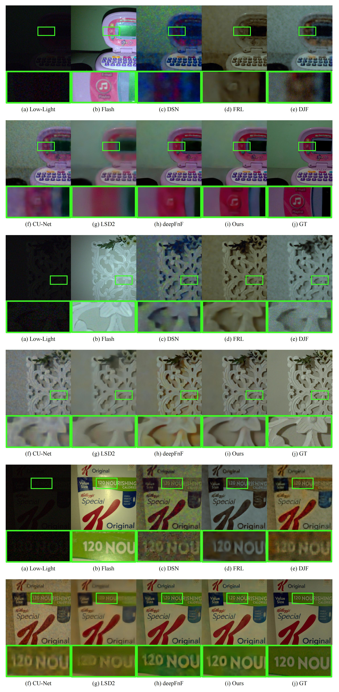

FLASH COMPENSATED LOW-LIGHT ENHANCEMENT
VIA HIERARCHICAL NETWORK PREDICTION
(Supplementary Material)
Haowei Kuang, Haofeng Huang, Wenhan Yang, Jiaying Liu
1. Implementation of the Compared Methods
The code links of all the compared methods are listed in Table 1. Thanks to the authors for sharing their codes, which is very helpful for our research work. For the single-image low-light enhancement methods [1], we retrain the models using the low/normal image pairs in the dataset. For the multi-modal image restoration methods [2,3,4,5,6], we follow the same training strategy of our method.
Table 1. Code links of the compared methods.
| Method | Code Link | |
|---|---|---|
| DSN [1] | hhttps://github.com/lin-zhao-resoLve/Deep-Symmetric-Network-Enhancement | |
| FRL [2] | https://github.com/liuxw11/FRL | |
| DJF [3] | https://github.com/Yijunmaverick/DeepJointFilter | |
| CU-Net [4] | https://github.com/cindydeng1991/TPAMI-CU-Net | |
| LSD2 [5] | https://github.com/jannemus/LSD2 | |
| deepFnF [6] | https://github.com/likesum/deepFnF | |
2. More Experimental Results
More visual results of our method compared with other methods are referred to Fig. 2. The results of our method make more accurate and visual-pleasing reconstruction of details and color.
Figure 2. More qualitative comparison with other methods.
References
[1] Lin Zhao, Shaoping Lu, Tao Chen, Zhenglu Yang, and Ariel Shamir, “Deep symmetric network for underexposed image enhancement with recurrent attentional learning,” in Proc. IEEE/CVF Int’l Conf. Computer Vision, 2021.
[2] Xiongwei Liu, Zehua Sheng, and Huiliang Shen, “Frequency-relevant residual learning for multi-modal image denoising,” in Proc. IEEE Int’l Conf. Image Porcessing, 2022.
[3] Yijun Li, Jia-Bin Huang, Narendra Ahuja, and Ming-Hsuan Yang, “Joint image filtering with deep convolutional networks,” IEEE Trans. Pattern Anal. Mach. Intell.”, vol. 41, no. 8, pp. 1909–1923, 2019.
[4] Xin Deng and Pier Luigi Dragotti, “Deep convolutional neural network for multi-modal image restoration and fusion,” IEEE Trans. Pattern Analysis and Machine Intelligence, vol. 43, no. 10, pp. 3333–3348, 2020.
[5] Janne Mustaniemi, Juho Kannala, Jiri Matas, Simo S¨arkk¨a, and Janne Heikkil¨a, “LSD2 – Joint denoising and deblurring of short and long exposure images with cnns,” in Proc. British Machine Vision Conf., 2020.
[6] Zhihao Xia, Micha¨el Gharbi, Federico Perazzi, Kalyan Sunkavalli, and Ayan Chakrabarti, “Deep denoising of flash and no-flash pairs for photography in low-light environments,” in Proc. IEEE/CVF Conf. Computer Vision and Pattern Recognition, 2021.